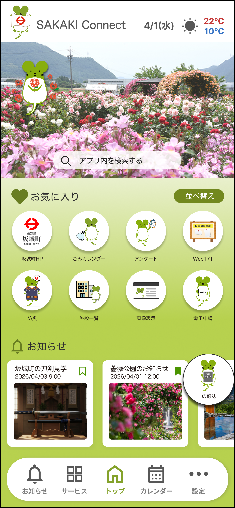
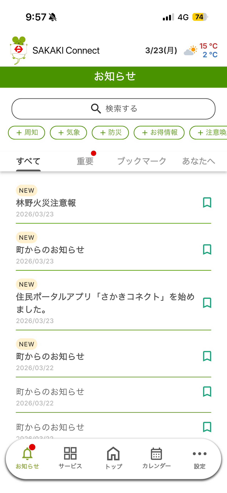
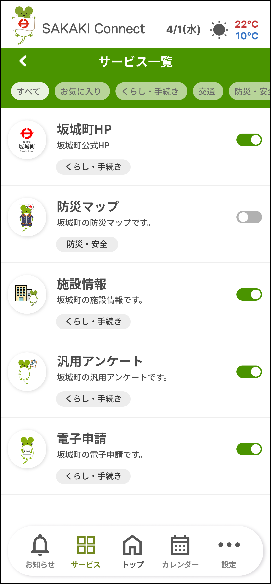

町からのお知らせ、ごみ出しカレンダー、防災マップから電子申請まで。日々の生活に役立つ情報が、あなたのスマートフォンに美しくまとまります。

Concept
坂城町が提供する公式スマートフォンアプリです。
マイナンバーカードによるデジタル認証にも対応し、
あなたに合った情報を最適なかたちでお届けします。
町からの重要なお知らせやイベント情報をプッシュ通知でお届け。フェーズフリー対応で、平常時も災害時の緊急情報も素早くキャッチできます。
地区ごとのごみ収集日をカレンダーで確認。ごみの分別検索も簡単です。自分の予定も一緒に管理できる便利なスケジュール機能を搭載。
マイナンバー連携による基本情報入力の簡略化。「ながの電子申請サービス」と連携し、スマホから各種申請が驚くほど簡単に行えます。
Core Features
坂城町からの様々なお知らせを、手軽に確認できます。「重要」などのタブ切り替えや、キーワード検索、気になる情報のブックマーク登録が可能。あなたの属性に合わせた情報が届きます。

明日の収集日
お住まいの地区を設定するだけで、ごみ収集日カレンダーが自動設定されます。トップ画面からすぐに確認でき、出し忘れを防ぎます。ごみの分別方法も簡単に検索できます。
坂城町内の公共施設や避難所の場所をマップで直感的に探せます。現在地からのルート確認や、洪水・土砂災害などのハザード情報もマップ上に重ねて確認できます。

Gallery
誰もが迷わず、直感的に操作できるデザインを追求しました。着せ替え機能で、トップ画面をあなた好みにカスタマイズすることも可能です。
複雑な設定は不要。すぐに坂城町の便利なサービスを利用できます。
お使いのスマートフォンのストア（App Store / Google Play）から無料でダウンロードします。
メールアドレス、またはマイナンバーカードのデジタル認証機能を使って安全にアカウントを作成します。
お住まいの地域を登録するだけで、ごみカレンダーやあなた向けのお知らせが届くようになります。
一部の機能はゲストログイン（登録なし）でもお試しいただけます。